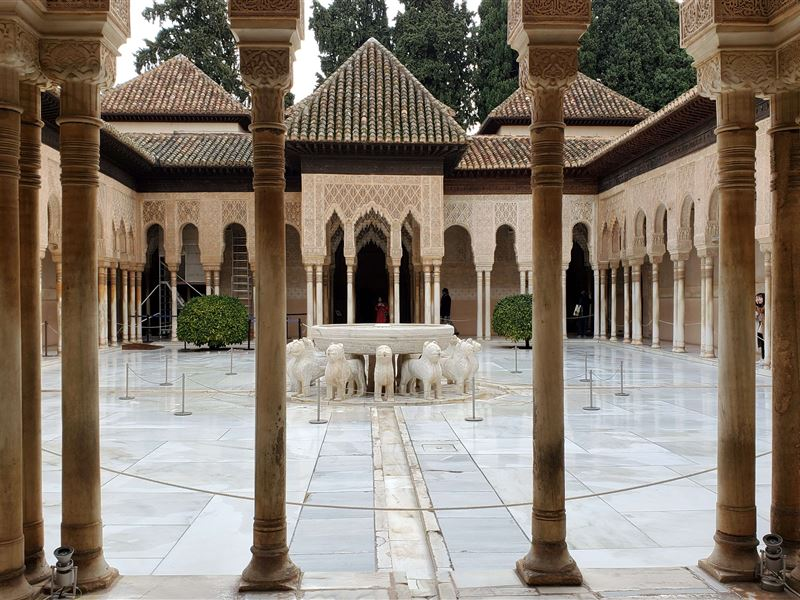
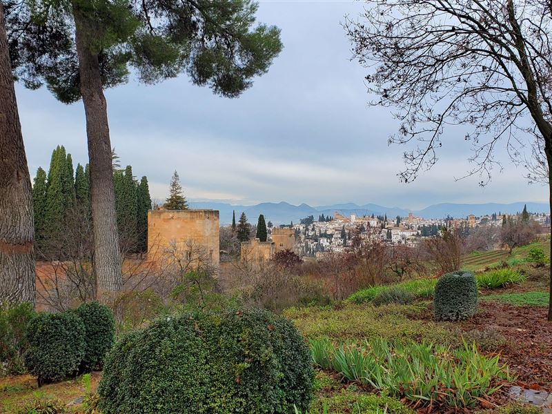
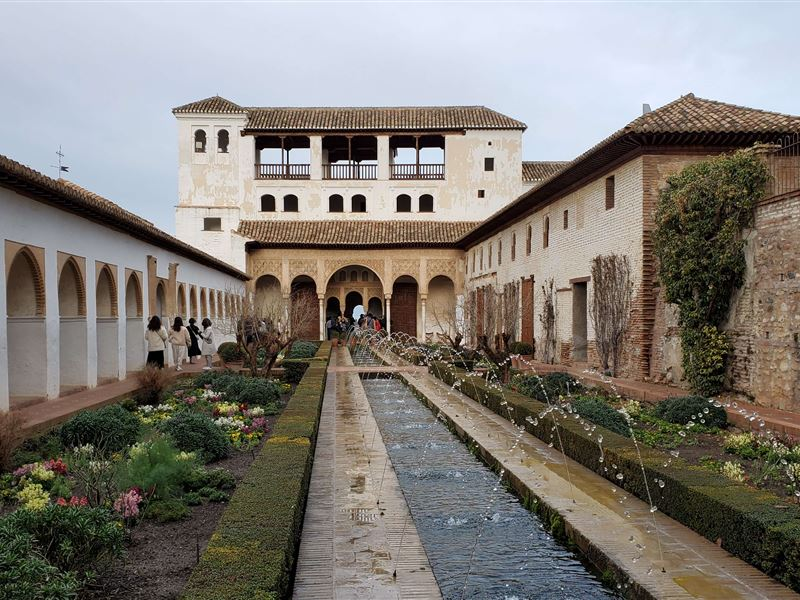
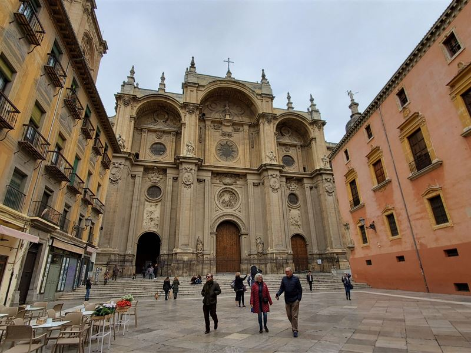
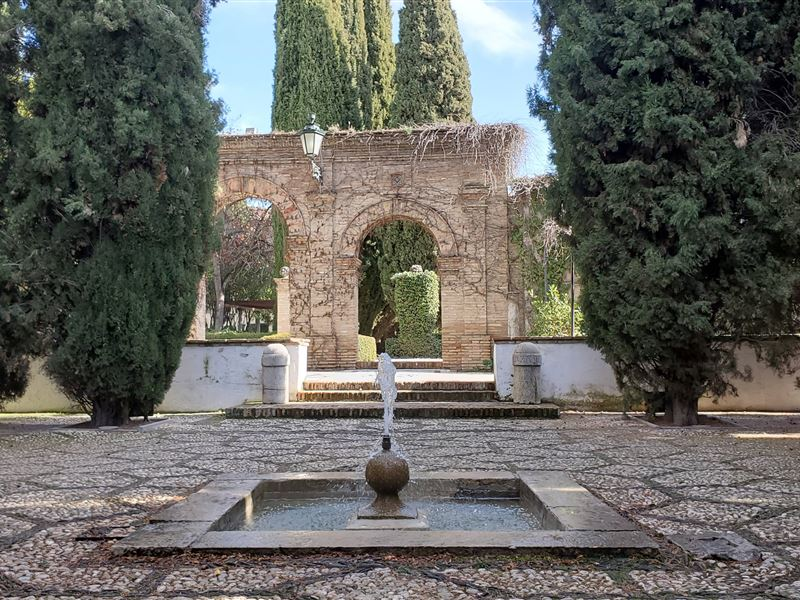
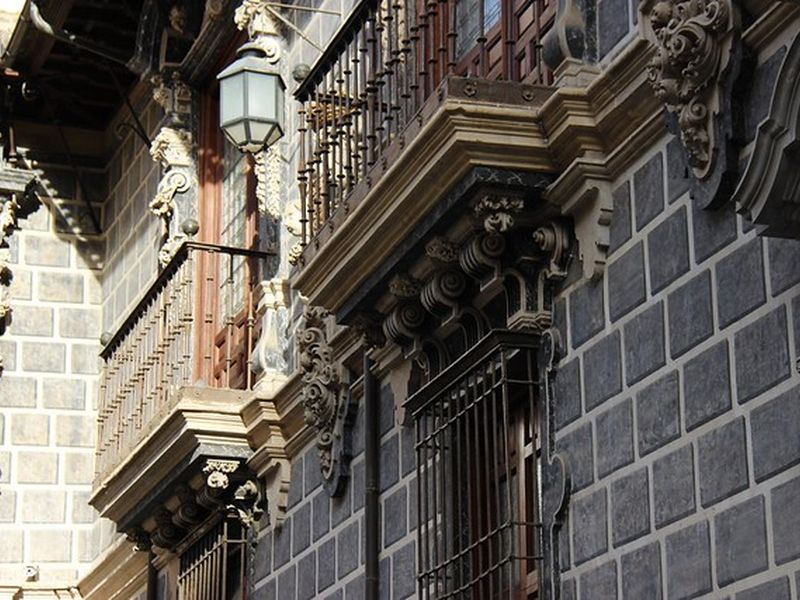
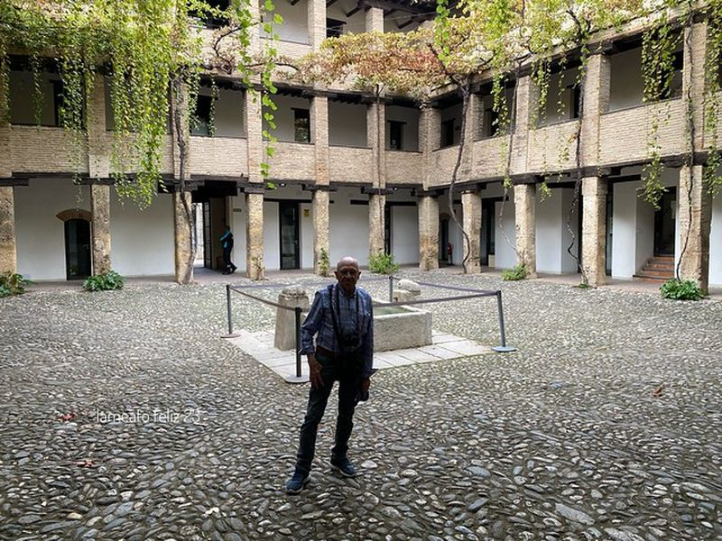
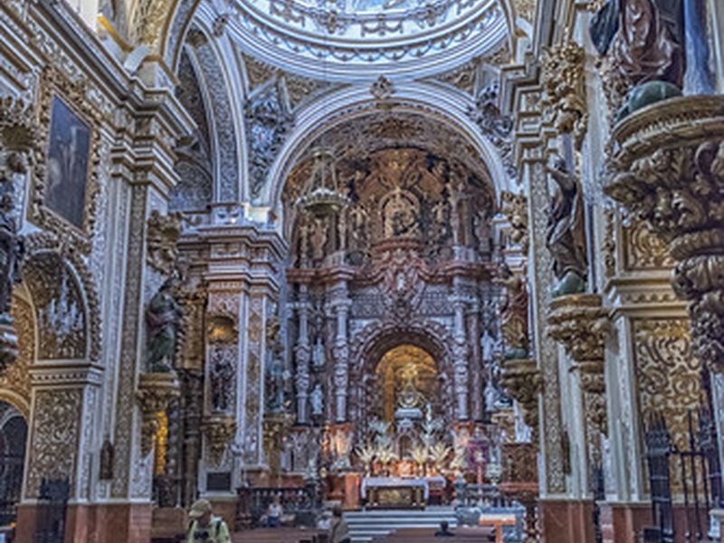
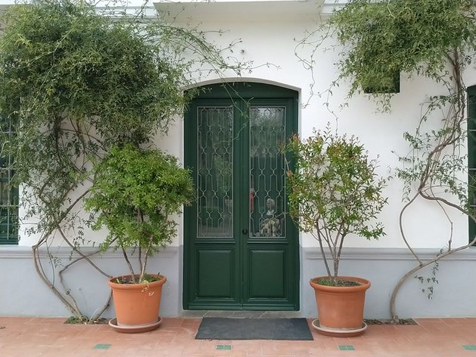

Explore Granada
A Brief History
Granada was the last Muslim kingdom on the Iberian Peninsula until its surrender to the Catholic Monarchs in 1492, ending centuries of Nasrid rule centered on the Alhambra palaces and Generalife gardens. The Albaicín quarter, cathedral, and royal chapel preserve Moorish street patterns and later Christian institutions. Snow-fed irrigation and mountain trade routes linked the city to the Sierra Nevada and the coast.
Attractions Map
Top Sights & Activities

Alhambra
The Alhambra is a Nasrid palace and fortress complex begun in the 13th century on Sabika hill above Granada. Halls, courtyards, and walls combine Islamic geometry with later Christian additions after 1492. Timed tickets regulate access to the palaces, fortress, and surrounding gardens.

Generalife Gardens
The Generalife served as a summer estate and orchard for Nasrid rulers beside the Alhambra. Terraced gardens, cypress alleys, and irrigation channels illustrate Andalusian landscape design. Paths connect pavilions and viewpoints above the Darro valley and city below.

Patio de la Acequia
Patio de la Acequia is the main courtyard of the Generalife with a long pool flanked by flower beds and arcades. The channel supplied water to terraced gardens on the hillside. The patio remains one of the most photographed spaces within the Nasrid garden complex.

Catedral de Granada
Granada Cathedral was built from 1523 over the former mosque after the Catholic Monarchs took the city. Diego de Siloé and later architects shaped its Renaissance and Baroque interior. The Royal Chapel beside the cathedral holds tombs of Ferdinand and Isabella.

Palacio de los Córdova
Palacio de los Córdova is a 16th-century mansion on the edge of the Albaicín with later modifications. Its patios and gardens overlook the Alhambra from the opposite hill. The building now hosts municipal cultural uses and public access to terraces with panoramic views.

Palacio de la Madraza
La Madraza was founded in 1349 as a Nasrid university beside the cathedral. Surviving oratory decoration and later Baroque chapel illustrate the transition from Islamic to Christian institutions in the city center. The building belongs to the University of Granada.

Corral del Carbón
Corral del Carbón is a 14th-century Nasrid caravanserai near the present market streets. Its arched entrance and courtyard served merchants storing goods in the city center. Restored in the 20th century, it now hosts cultural events and remains an early example of Islamic commercial architecture.

Basílica Virgen de las Angustias
The basilica of Our Lady of Sorrows is Granada's principal Baroque church and focus of local devotion. Built from the 17th century on a pilgrimage site, its interior houses the venerated image of the Virgin. The church stands near the Genil river in the expanded city center.

Huerta de San Vicente
Huerta de San Vicente was the summer house of Federico García Lorca's family on the edge of Granada. The modest villa and garden preserve rooms where the poet spent periods before his death in 1936. A museum presents manuscripts, furniture, and family history within the orchard setting.